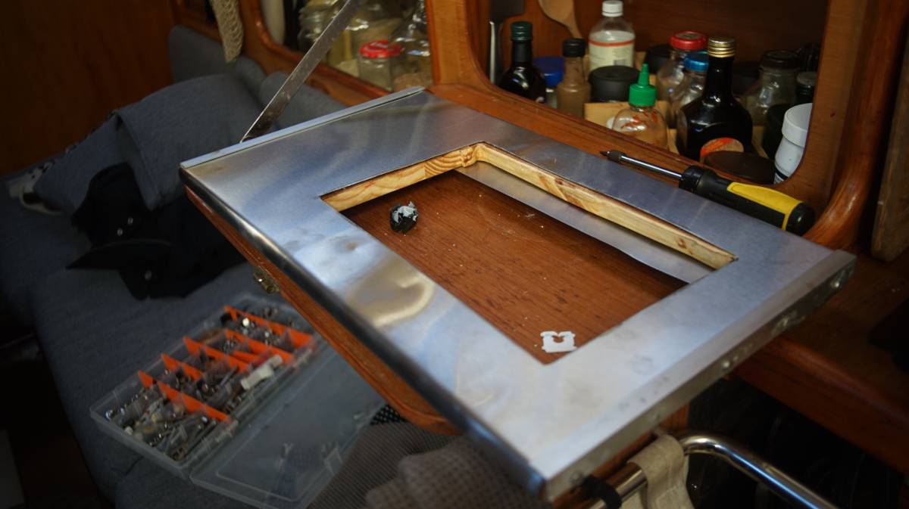
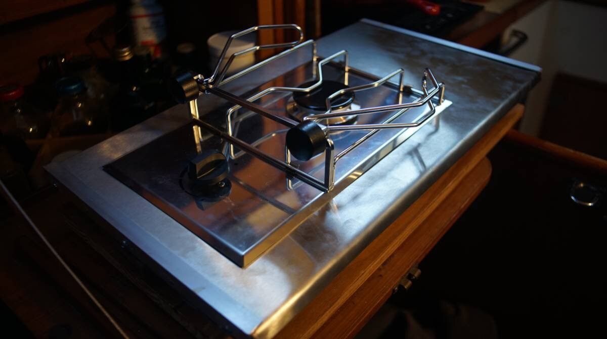
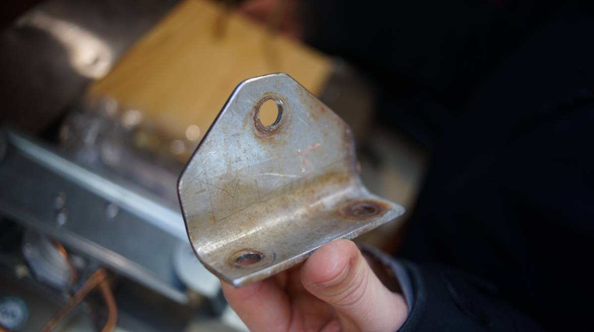
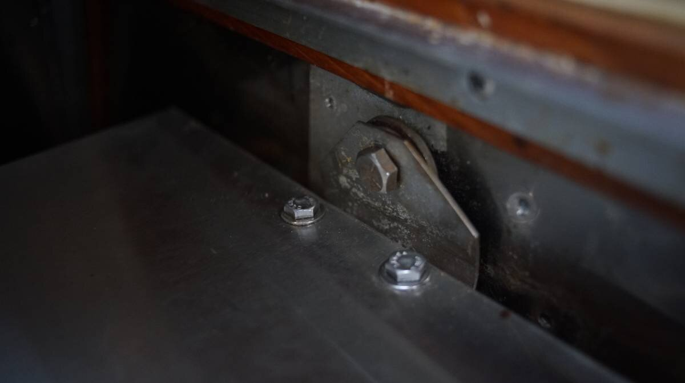
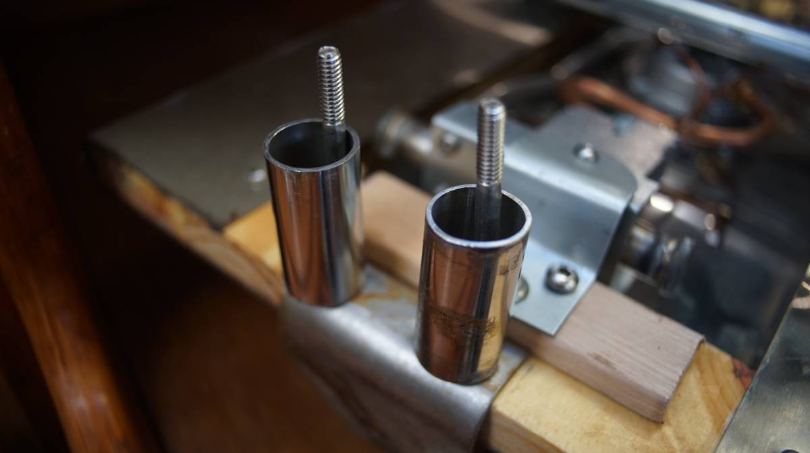
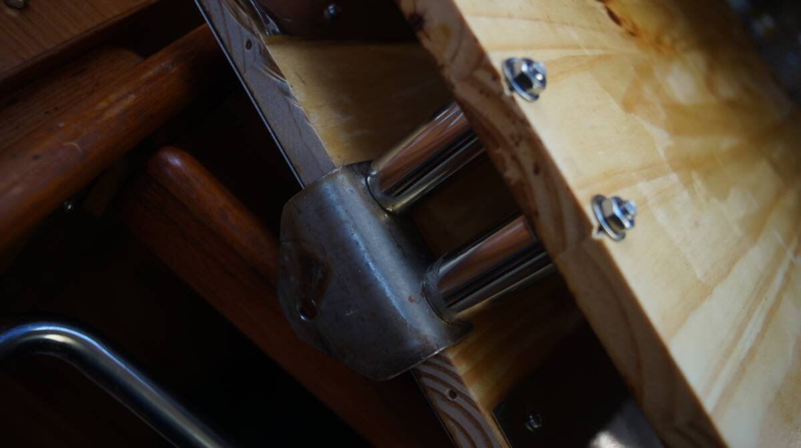
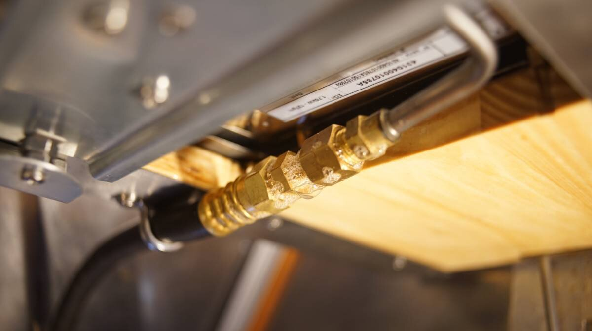
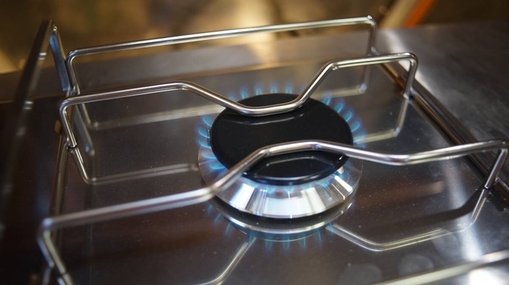
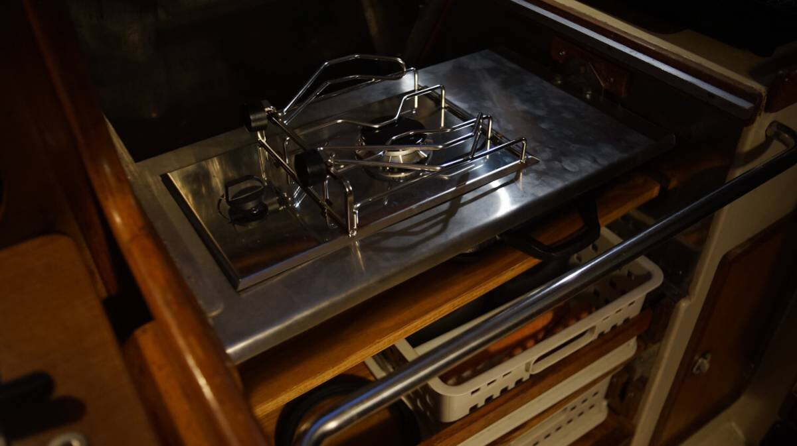

gimballed stove
2024.02.06
Victoria, BC.
Click below dates for more recent updates:
Single LPG burners are not common, but a local marine store found us a European model with a converter(+15$) for the LPG connection(North American standards differ). The unit was 400$, but we paid 250$CAD because of a defect. The LPG components are fine, the defect is cosmetic, the top SS plate has a slight bend to it which is easy for us to correct but difficult for a store to sell.

This burner is made by Eno, a company that has swallowed up the once Canadian-owned Force10(the makers of our former LPG stove).
Our plan for the gimballed stove was to make a stainless steel(SS)-covered surface for the burner, and to attach another layer underneath to store our heavy cast-iron square griddle, which would also serve as ballast for the gimbal(we don't use the griddle at sea).
The burner layer
A friend gave us a sheet of SS she didn't need(thank you Sarah R.), which we cut to cover a length of wood that would nest our new gimballed burner. The wood was cut to size when we built our open pantry. An all-stainless steel layer would have been nice, but thin sheets of SS aren't rigid enough to support anything unless given a solid bend, which is difficult to do by hand without the right tools, and without asking for the help of a fabricator—we're stubborn like that.
To cut the sheet of SS, we borrowed Peter's grinder because we somehow lost the locknut for ours(a replacement is on the way). Using it, we cut a hole in the SS sheet matching the size of our burner, and did the same for the wood piece that will sit underneath it.
We knew we couldn't do solid bends, but we could work the SS sheet around the wood, overlapping part of the bottom. Even if the SS is thin, bending it by hand to meet the edge of the wood requires patience. We secured the SS sheet over the wood with several adjustable clamps, then laid the side on the ground(with a mat underneath) and used the weight of our bodies to make a bend. To bend it further so that it meets the side better, we placed a block of wood over the side(over the wood and SS) and banged on it with a rubber mallet.
Apparently, it is possible to work it into a bend using just a piece of wood but we couldn't manage it(it depends on the thickness of the metal). We also used a small drill press vise, setting the mouth of the vise over the edge(someone had to hold the bottom edge of the sheet down so that it could fit in the gap) and tightening the jaws as hard as we could. The jaws force the two sides down, forcing a bend. Because the vise is not wide, we loosened it, moved it a bit further, tightened it again, then repeated this process for the whole length.
The result was a nice rounded bend. We drilled holes in the back and put in 4 screws per side to hold the metal onto the wood (the SS sheet bends over the edges and overlaps part of the bottom).
This is what the burner looks like when set into the hole. The burner is secured with 3 brackets underneath(they come with the burner when you buy it).
We re-used two aluminum rails from a former project to decorate the edges, isolating the two metals with some non-conductive material(see effect of combining dissimilar metals). Electrical insulating sleeve washers(plastic washers with a collar) are also a good idea for the SS screws. Stainless steel and aluminum are not friends. Edit: We ended up removing the aluminum rails because it added too much thickness to the sides.
2024.02.09
Victoria, BC.
The lower layer, and gimbal
To make the gimbal, we used two thick-walled SS brackets we had lying around. Each bracket has 2 holes on one side, and 1 on the other. The design of these brackets was ideal, we wouldn't have to drill holes into thick SS, yay! Drilling into thick stainless steel is painstaking work, if you're not patient and try to hasten the process the material will only get harder, it will punish you and dull all of your expensive cobalt drill bits.
Because we couldn't re-use the holes left by the former stove, we had to make some new ones. Force10 stoves have a built-in rounded peg on each side which slide into a wall bracket, the pegs rest into a hole, and the oven is held down by its own weight. This design is flawed. If the boat is rolled in a storm there is a chance that the heavy oven can leap out of its spot. For our little burner, we used 2 heavy hex bolts to create the fixed rotation point for the gimbal(like the pegs for the Force10 oven). The hex bolts will go through both brackets, ensuring that the burner stays put.
We used 4 long hex bolts to secure the top and lower layer of our gimballed platform. The hex bolts go through the first layer, through short lengths of SS tubing (off-cuts from another project), through the lower layer and are terminated by washers and nuts. The SS tubing keeps the two layers separate. This design permits plenty of air to flow below and around the burner, which is essential for an LPG appliance, the area below a drop-in burner like ours should NOT be closed in.
 We added washers between the wall and the SS bracket,to space it away from the wall on both sides. The right side of the stove is a thin sheet of SS overlaid over fibreglass, we added a piece of wood behind the wall to strengthen it, and terminated the connection by a washer and a nut.
The burner we bought is a drop-in, typically affixed to something that won't move, so unlike most gimballed stoves the fitting for the propane is horizontal (our former gimballed stove had a vertical fitting). This matters because a propane hose that exits horizontally will add weight to the back of the stove, messing up the balance of the platform. To fix this, we added a longer loop behind the stove, and we had to add a support bracket for the hose to relieve pressure on the fitting.
A stove with a converter like ours isn't ideal because it creates more weak points in the system, but if the connections are nice and tight it's not a problem. We tested the stove and applied soapy water to the connections(see above photo) to make sure there was no leak. The soap will already create bubbles, but if there is a leak the soap bubbles will expand, if you see bubbles expanding you will have to tighten the fittings again.
Tightening LPG fittings "A good rule of thumb is to tighten the fitting until you feel resistance, and then give it an additional quarter to half turn with a wrench. This method will help ensure that the fitting is tight enough to prevent leaks, but not so tight as to cause damage" [Source].
Flared propane fittings shouldn't have sealant on the threads(when the flare nut is tightened, it compresses the flare fitting and creates a seal), but pipe-threaded parts of the system ought to have tape (pipe threads are tapered, they get tighter the further you screw things together but can leak around the threads, a sealant is necessary to fill the gaps and make a good seal).
For non-flared threaded connections, we chose tape that is rated for gas lines (yellow tape). Regular teflon tape for plumbing can break down overtime if used in an LPG system, it's also possible to apply gas-rated liquid/paste sealants.
We tested our little burner, and it worked great. Next on our list is to install the new propane sniffer and solenoid control panel(our control panel died summer 2023), two essential parts of an LPG system.
More updates soon...
Mistakes
We've made a few mistakes with this project, a major one is that we made the surface too wide... right now the stove can't swing past a set of aluminum rails. That is a very aggressive angle and it is unlikely that the burner will swing that far, but we may cut part of the rails to allow it to free swing. We'll test the stove this summer and make adjustments the following winter.
See our open pantry, or return to galley refit.